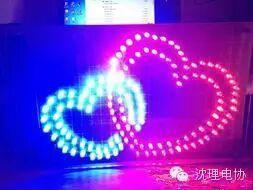
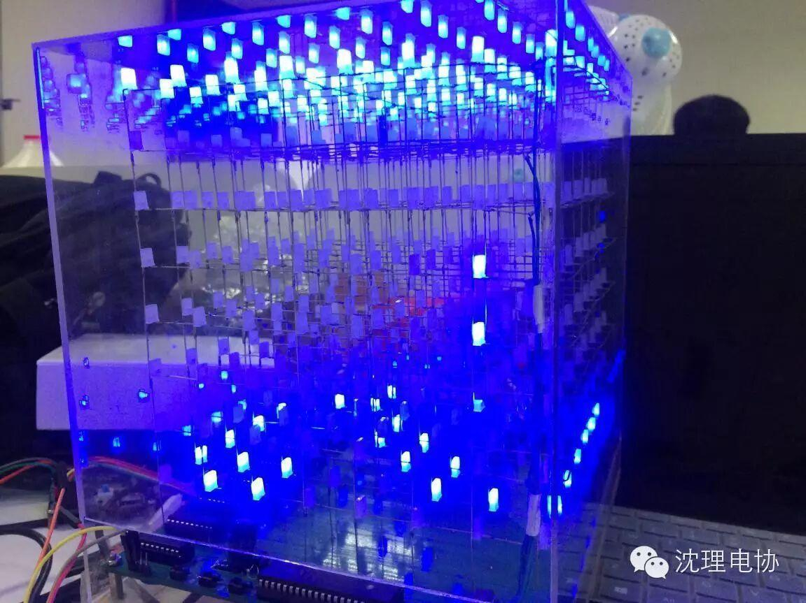
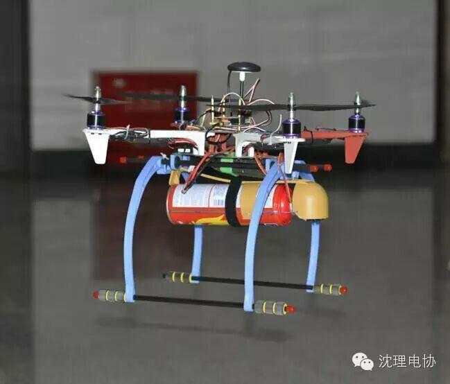
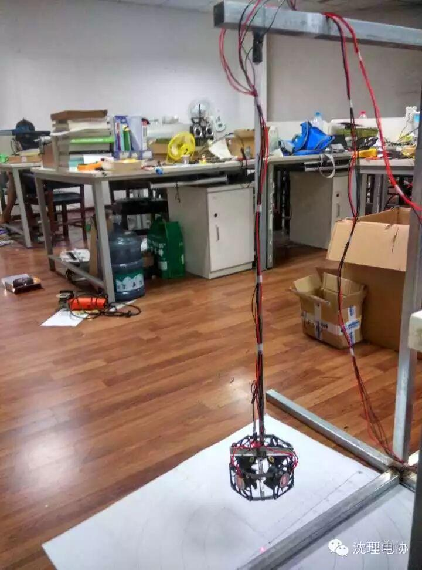

使用小程序
随着机器人大赛的结束，大家从以前的对电协的一无所知，到有了一定的了解，可能大家感觉好难啊，我的车直到比赛也没有做出来，其实小编也感觉，大家从没有任何基础就直接做小车的确是难为大家了，但是你们还是给了我们很多惊喜，用许多同学自己做的车都不错，说实话，在要比赛的日子里，每天都有很多同学来实验室向学长请教问题，我感觉真的很开心，学弟们的这样积极的态度让我感觉，电协以后的发展一定会更好的。

我感觉对于这次比赛，我们应该理解为他只是我们学电子路上的，一个小小的考验，我们不应该去计较得了什么名次，而是通过这次比赛，你学会了多少，即使你的小车没有获奖，但是你学到的很多东西，我觉得，那比在比赛中获奖了，但是没有学到东西的人强。

比赛结束后，无论是做出来小车的，还是没做出来的，对小车的研究不能停，自己什么地方不会，，一定要搞会，咱们比赛的小车基本都是遥控的，咱们以后还可一往上加寻迹模块，声波模块，红外模块，什么有意思的东西都可以往上加，一边玩，就一边把东西学了。

对于没有做出小车的同学，有的同学会问，我这时间太忙了，没有做上小车现在想学，还来得急吗？对于这样的同学，我想说当然来的急，只要你有心想学，电子协会的大门就永远为你敞开，不要怕晚，咱们有很多的学长都是后来才开始学的，现在他们都非常的出色，水平都很高。

还有的同学想，这太难了，我真的不想学，那我还能在电协待着吗，这时候小编很肯的告诉你，当然可以，如果你不想太深入的学习，你可以做一些不需要自己编程的东西，无论是自己玩还是表白，还是用来送朋友，都非常有意义。更重要的是，不一定只有学好电子才对电协有意义，你们每一个人的力量都是社团不可缺少的，社团的发展，和进步不仅仅只是有技术就可以的，社团需要你们的力量。